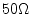
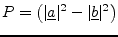
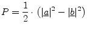
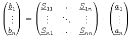

Voltage and current are hard to measure at high frequencies. Short and open circuits (used by definitions of most n-port parameters) are hard to realize at high frequencies. Therefore, microwave engineers work with so-called scattering parameters (S parameters), that uses waves and matched terminations (normally ). This procedure also minimizes reflection problems.
A (normalized) wave is defined as ingoing wave or outgoing wave :
|  | (1.2) |
|  | (1.3) |
|  | (1.4) |
One final note: The reference impedance can be arbitrary chosen. It normally is real, and there is no urgent reason to use a complex one. The definitions in equation 1.1, however, are made form complex impedances. These ones stem from [1], where they are named "power waves". These power waves are a useful way to define waves with complex reference impedances, but they differ from the waves introduced in the following chapter. For real reference impedances both definitions equal each other.